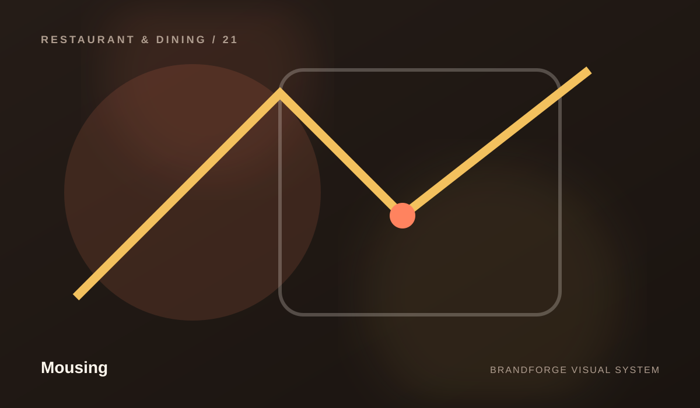
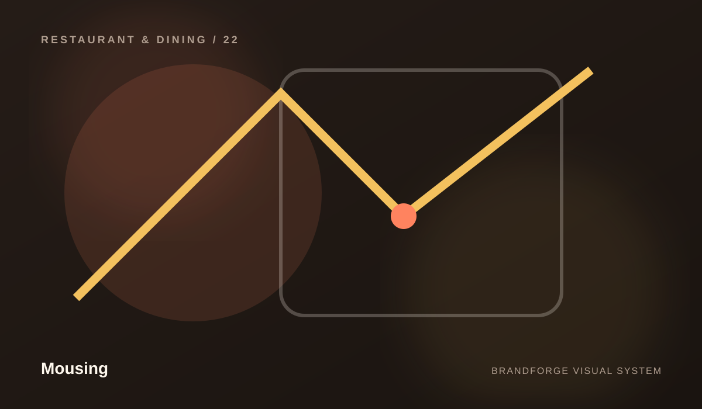
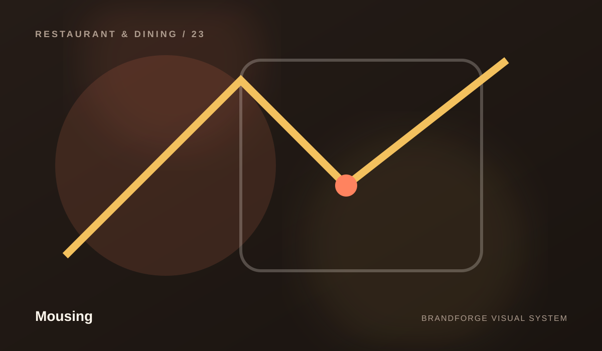
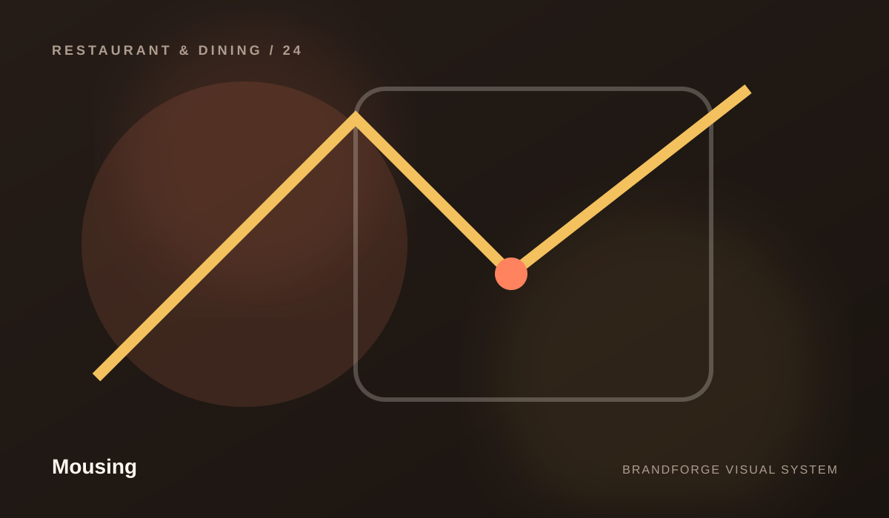
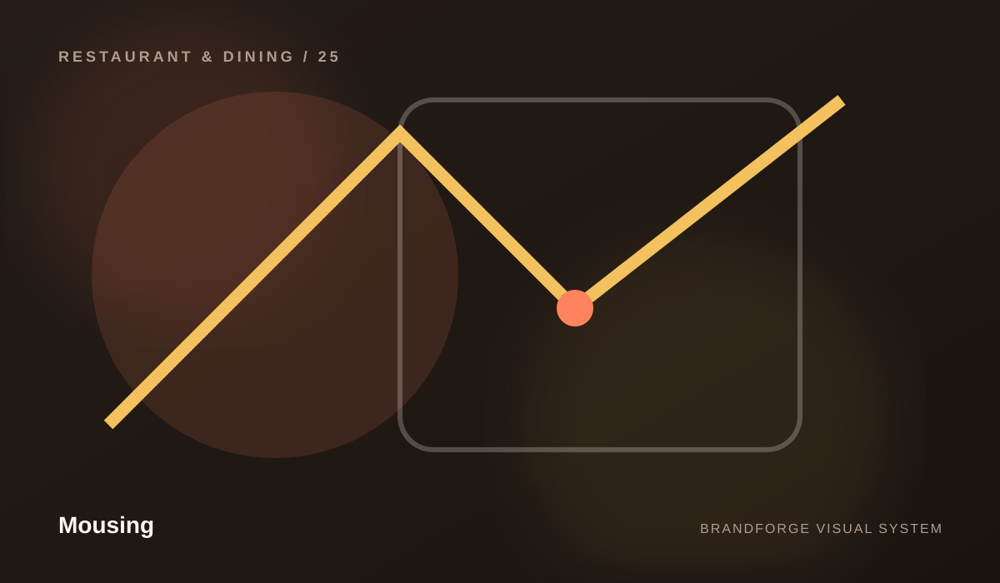

Mousing
Capabilities built to work together.
Mousing is organized as a connected system. Each area has its own role, but the experience becomes stronger when the pieces share one direction.


Menu
Menu is treated as part of the complete Mousing experience — designed to simplify the system while keeping the experience clear, useful, and maintainable.
Explore capability ↗
Reservations
Reservations is treated as part of the complete Mousing experience — designed to connect the system while keeping the experience clear, useful, and maintainable.
Explore capability ↗
Private Dining
Private Dining is treated as part of the complete Mousing experience — designed to shape the system while keeping the experience clear, useful, and maintainable.
Explore capability ↗
Catering
Catering is treated as part of the complete Mousing experience — designed to clarify the system while keeping the experience clear, useful, and maintainable.
Explore capability ↗
Locations
Locations is treated as part of the complete Mousing experience — designed to clarify the system while keeping the experience clear, useful, and maintainable.
Explore capability ↗CONNECTED BY DESIGN
One capability should strengthen the next.
Instead of presenting a disconnected list of services, the site explains how the different areas can reinforce one another. That creates a clearer story and a more professional path through the brand.